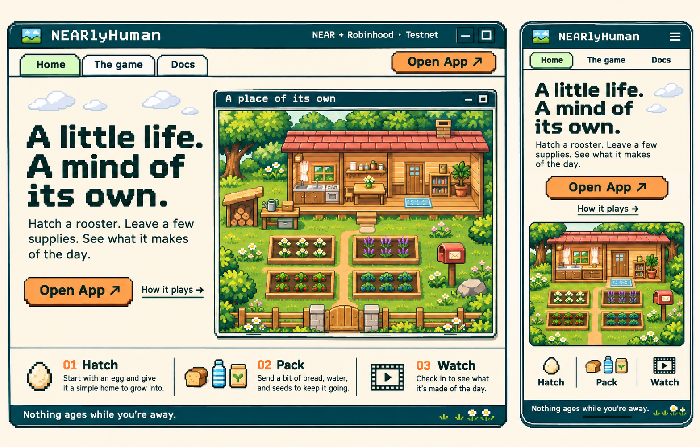
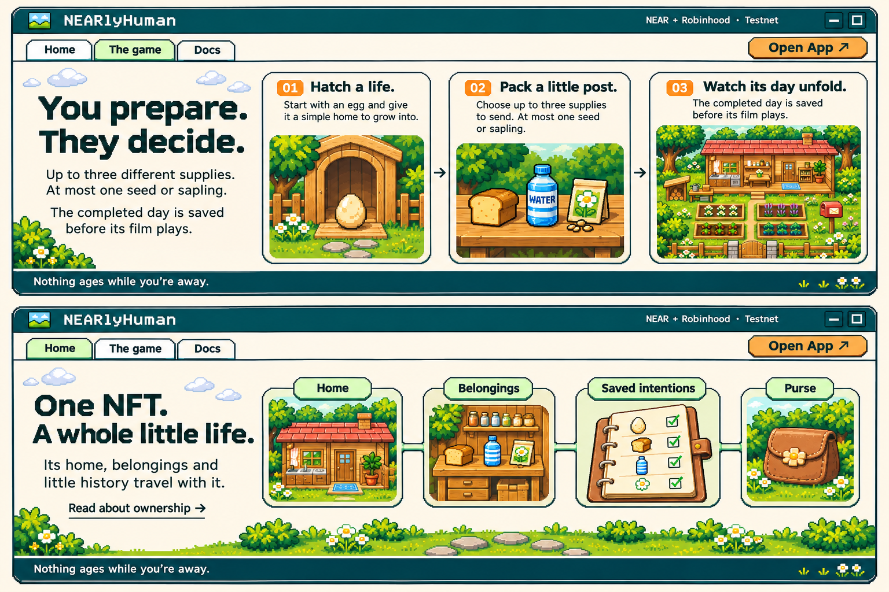
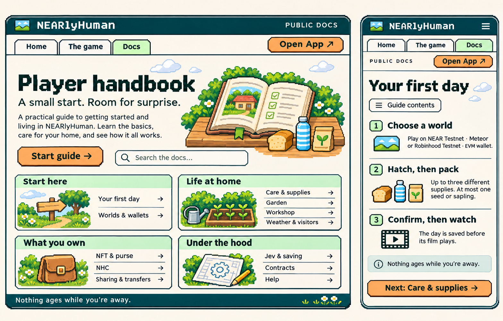
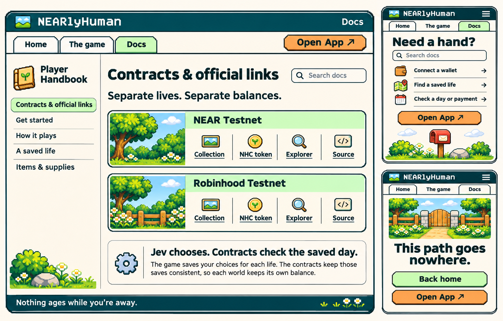

Morning Utility
Morning Gate's sunny feeling, with Little Life Utility's retro window language. Four compact build-reference boards plus the clean production environment. Text and controls are guides; actual page content and game behavior remain authoritative.



